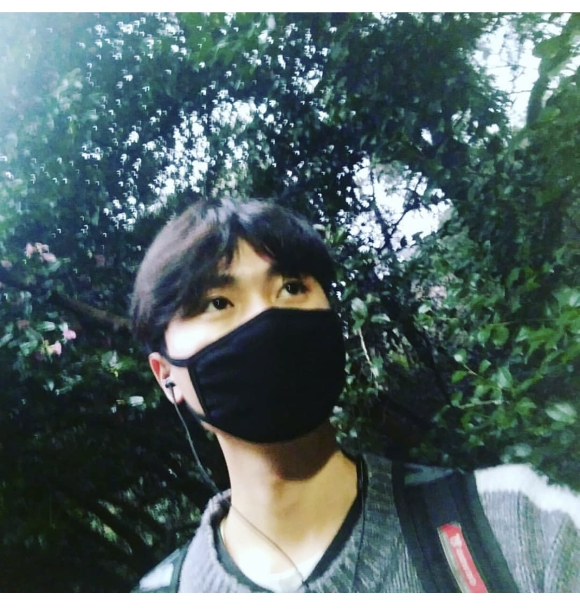

News
Sep 2024
Our team (I am the Team Leader) has been selected as one of the 10 teams for the Amazon Trusted AI Challenge.
July 2024
Received a 4,000 USD research award from OpenAI.
Feb 2024
I will be a Research Intern at Tencent AI Lab (Seattle) in May 2024
Feb 2024
Invited Reviewer for ACM MM 2024.
Jan 2024
Invited to serve on the review committee for the track LC10 - Information Extraction, Knowledge Extraction, and Text Mining at LREC-COLING 2024.
Jan 2024
Invited Reviewer for ICML 2024.
Nov 2023
FaithScore for LVLM hallucinations evaluation is out. Use our tool for any multimodal open-ended questions!
Sep 2023
Invited Reviewer for IEEE Transactions on Audio, Speech, and Language Processing and ICLR 2024.
Aug 2023
Invited Emergency Reviewer for EMNLP 2023.
March 2023
Invited Reviewer for NeurIPS 2023.
February 2023
Invited Reviewer for IEEE TCSVT.
January 2023
Invited Reviewer for ICML 2023.
January 2023
Invited Reviewer for IEEE TMM.
October 2022
Invited Reviewer for Information Sciences.
July 2022
Invited Reviewer for NeurIPS 2022 and ACM MM 2022.
April 2022
I win the ACM SIGIR 2022 Student Travel Grant.
August 2021
I will be as a Research Intern at Alibaba DAMO Academy in Aug. 2021, supervised by Zhongzhou Zhao
|  |
Liqiang Jing （CN: 井立强）
Email: jingliqiang6 AT gmail.com
|
I am happy to chat and discuss potential collaborations. Please feel free to reach out to me via Email (jingliqiang6 AT gmail.com).
- If you are looking for research opportunities in Professor Du's Lab, please contact Professor Xinya Du.
- If you are a Beginner Researcher and want to work with me, please contact me with your CV, research interests, and research proposal. I won't take on an intern unless they have a project that interests me or I need an intern for my project.
- If you are an experienced researcher and want to collaborate/talk with me, please contact me directly.
Education
| The University of Texas at Dallas Ph.D. in Computer Science, Aug. 2023 - present Advisor: Xinya Du |
| Shandong University Master in Computer Technology, Sep. 2020 - Jun. 2023 Transcript Advisor: Xuemeng Song Co-Advisor: Liqiang Nie |
| Hefei University of Technology Bachelor in Computer Science and Technology, Sep. 2016 - Jul. 2020 Transcript |
Experiences
| Research Intern, Tencent America AI Lab, Bellevue, America, May. 2024 -- Aug 2024 Advisor: Xiaoyang Wang, Wenlin Yao, Wenhao Yu, Kaixin Ma, Hongming Zhang, Dong Yu |
| Research Intern, Alibaba DAMO Academy, Hangzhou, China, May. 2022 -- Jan. 2023 Advisor: Zhongzhou Zhao |
| AIR (Alibaba Innovative Research) Project Intern, Alibaba DAMO Academy, Hangzhou, China, Aug. 2021 -- Jan. 2022 Advisor: Zhongzhou Zhao |
Papers
* indicates equal contribution. † indicates that I am a project leader or co-leader.
| Sentiment-enhanced Graph-based Sarcasm Explanation in Dialogue.
Kun Ouyang, Liqiang Jing†, Xuemeng Song, Meng Liu, Yupeng Hu & Liqiang Nie Arxiv • Codes&Data |
|
| Fine-grained and Explanable Factuality Evaluation for Multimodal Summarization.
Yue Zhang, Jingxuan Zuo & Liqiang Jing† Arxiv • Codes&Data |
|
| FGAIF: Aligning Large Vision-Language Models with Fine-grained AI Feedback.
Liqiang Jing & Xinya Du Arxiv • Codes&Data |
|
| DSBench: How Far Are Data Science Agents to Becoming Data Science Experts?
Liqiang Jing, Zhehui Huang, Xiaoyang Wang, Wenlin Yao, Wenhao Yu, Kaixin Ma, Hongming Zhang, Xinya Du & Dong Yu Arxiv • Codes&Data |
|
| FIHA: Autonomous Hallucination Evaluation in Vision-Language Models with Davidson Scene Graphs.
Bowen Yan*, Zhengsong Zhang*, Liqiang Jing*, Eftekhar Hossain & Xinya Du Arxiv • Codes&Data |
| Defeasible Visual Entailment: Benchmark, Evaluator, and Reward-Driven Optimization.
Yue Zhang, Liqiang Jing & Vibhav Gogate AAAI 2025 • Codes&Data |
| Debiasing Multimodal Sarcasm Detection with Contrastive Learning.
Mengzhao Jia, Can Xie & Liqiang Jing† AAAI 2024 • Codes&Data |
|
| Knowledge-enhanced Memory Model for Emotional Support Conversation.
Mengzhao Jia, Qianglong Chen, Liqiang Jing, Dawei Fu & Renyu Li AAAI 2024 • Codes&Data |
|
| VK-G2T: Vision and Context Knowledge Enhanced Gloss2Text.
Liqiang Jing, Xuemeng Song, Xinxing Zu, Na Zheng, Zhongzhou Zhao & Liqiang Nie ICASSP 2024 • Codes&Data |
|
| A Unified Hallucination Mitigation Framework for Large Vision-Language Models.
Yue Chang*, Liqiang Jing*, Xiaopeng Zhang* & Yue Zhang TMLR • Codes&Data |
|
| FaithScore: Fine-grained Evaluations of Hallucinations in Large Vision-Language Models.
Liqiang Jing, Ruosen Li, Yunmo Chen & Xinya Du EMNLP 2024 • Codes&Data |
| Vision Enhanced Generative Pre-trained Language Model for Multimodal Sentence Summarization.
Liqiang Jing, Yiren Li, Junhao Xu, Yongcan Yu, Pei Shen & Xuemeng Song Machine Intelligence Research • Codes&Data |
|
| Mutual-enhanced Incongruity Learning Network for Multi-modal Sarcasm Detection.
Yang Qiao, Liqiang Jing†, Xuemeng Song, Xiaolin Chen, Lei Zhu & Liqiang Nie AAAI 2023 (Oral) • Codes&Data |
|
| Adapting Generative Pretrained Language Model for Open-domain Multimodal Sentence Summarization.
Dengtian Lin, Liqiang Jing†, Xuemeng Song, Meng Liu, Teng Sun & Liqiang Nie ACM SIGIR 2023 (Oral) • Codes&Data |
|
| Dual Consistency-enhanced Semi-supervised Sentiment Analysis towards COVID-19 Tweets.
Teng Sun, Liqiang Jing, Yinwei Wei, Xuemeng Song, Zhiyong Cheng & Liqiang Nie IEEE TKDE • Codes&Data |
|
| Multi-source Semantic Graph-based Multimodal Sarcasm Explanation Generation.
Liqiang Jing, Xuemeng Song, Kun Ouyang, Mengzhao Jia & Liqiang Nie ACL 2023 • Codes&Data |
|
| Stylized Data-to-Text Generation: A Case Study in the E-Commerce Domain.
Liqiang Jing, Xuemeng Song, Xuming Lin, Zhongzhou Zhao, Wei Zhou & Liqiang Nie ACM TOIS • Codes&Data |
|
| Multimodal Dialog Systems with Dual Knowledge-enhanced Generative Pretrained Language Model.
Xiaolin Chen, Xuemeng Song, Liqiang Jing, Shuo Li, Linmei Hu & Liqiang Nie ACM TOIS • Codes&Data |
|
| General Debiasing for Multimodal Sentiment Analysis.
Teng Sun, Juntong Ni, Wenjie Wang, Liqiang Jing, Yinwei Wei & Liqiang Nie ACM MM 2023 • Codes&Data |
| V2P: Vision-to-Prompt based Multi-Modal Product Summary Generation.
Xuemeng Song, Liqiang Jing, Dengtian Lin, Zhongzhou Zhao, Haiqing Chen & Liqiang Nie ACM SIGIR 2022 (Oral) • Codes&Data |
|
| Counterfactual Reasoning for Out-of-distribution Multimodal Sentiment Analysis.
Teng Sun, Wenjie Wang, Liqiang Jing, Yiran Cui, Xuemeng Song & Liqiang Nie ACM MM 2022 (Award Recommendation, Oral) • Codes&Data |
|
| CI-OCM: Counterfactural Inference towards Unbiased Outfit Compatibility Modeling.
Liqiang Jing, Minghui Tian, Xiaolin Chen, Teng Sun, Weili Guan & Xuemeng Song ACM MM 2022 • Codes&Data |
Talks
|
Evaluating Hallucination in LVLMs on AGI Super Summit hosted by SuperAGI. Feb, 2024.
Slides |
|
ACM MM 2022 Oral on Counterfactual Reasoning for Out-of-distribution Multimodal Sentiment Analysis. Oct, 2022.
Slides |
|
ACM MCFR 2022 on CI-OCM: Counterfactual Inference towards Unbiased Outfit Compatibility Modeling. Oct, 2022.
Slides |
|
ACM SIGIR 2022 Oral on V2P: Vision-to-Prompt based Multi-Modal Product Summary Generation. Jul, 2022.
Slides |
Patent
| Text generation methods and devices (applying) CN202211048016.0 |
| Text generation methods and devices (applying) CN202211158537.1 |
| A knowledge-guided multi-source information fusion method for predicting blast furnace gas (applying) CN202210606561.0 |
| Adaptive deployment methods, systems, devices and storage media of transmission inspection terminals CN202211146873.4 |
Teaching Assistant
|
Spring 2024, CS 4375 Introduction to Machine Learning, University of Texas at Dallas Fall 2023, CS 6320 Natural Language Processing, University of Texas at Dallas Spring 2021, Machine Learning, Shandong University |
Professional Services
|
Invited Reviewer for Conferences: 2022: ACM MM Workshop, NeurIPS; 2023: ICML, NeurIPS, EMNLP; 2024: ICLR, ICML, LREC, COLING, ACM MM. |
|
Invited Reviewer for Journals: Information Sciences, IEEE TMM, IEEE TCSVT, IEEE TASLP, Neurocomputing. |
Honors
|
Researcher Access Program Award, OpenAI, 2024 Outstanding Graduate Student, Shandong University, 2022 ACM SIGIR Student Travel Grant, 2022 Excellent Graduate, Hefei University of Technology, 2020 National Encouragement Scholarship, 2017, 2018, 2019 First Class Scholarship, Hefei University of Technology, 2018, 2019 |

Last Update, Oct 2024.